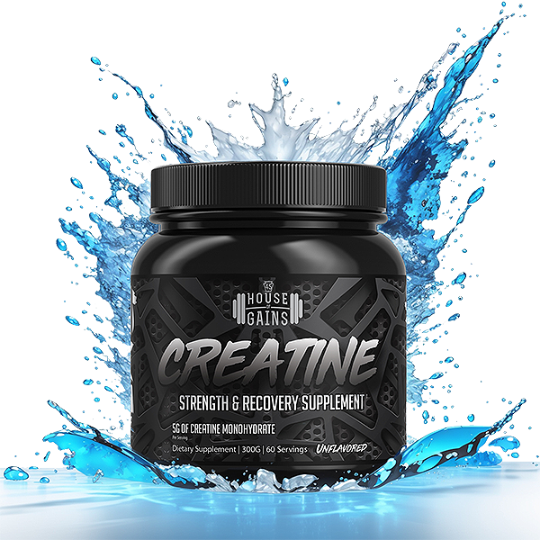

Introduction to Creatine Monohydrate
Get From Amazon
Creatine Monohydrate is one of the most popular and widely used supplements in the United States. Athletes and fitness enthusiasts across the U.S. rely on it to boost strength, improve performance, and increase muscle mass. In this post, we'll dive into the science behind Creatine Monohydrate and explore how it can benefit your workout routine.
Click That
What is Creatine Monohydrate?
Creatine is a naturally occurring compound in the body that helps produce energy during high-intensity exercise. Creatine Monohydrate is the most researched and effective form of creatine available. It helps replenish ATP (adenosine triphosphate), the body's primary energy carrier, enabling muscles to perform better during strenuous activity.
The Key Benefits of Creatine Monohydrate
Boosts Muscle Strength
Creatine increases ATP production, allowing you to lift heavier weights and perform more reps. This leads to faster muscle growth and improved strength.
Improves Performance
Creatine enhances your performance in high-intensity workouts, making it perfect for athletes and gym-goers who want to maximize their workouts.
Speeds Up Recovery
Creatine helps reduce muscle damage and inflammation, speeding up recovery and reducing post-workout soreness.
How to Use Creatine Monohydrate
The standard recommended dose for creatine is around 3-5 grams per day. Some users opt for a "loading phase," taking 20 grams per day for 5-7 days, followed by a maintenance phase of 3-5 grams per day. However, the maintenance dose is generally sufficient for long-term benefits, and a loading phase is not mandatory.
Why Choose Pure Creatine Monohydrate?
When selecting a creatine supplement, purity matters. Pure Creatine Monohydrate contains no fillers or additives, ensuring you get the most effective and clean form of creatine. Look for a product that is micronized for better absorption and solubility. Buy on Amazon
Is Creatine Safe?
Yes, creatine is safe for most people when taken as directed. It’s one of the most extensively studied supplements, with a long track record of safety and effectiveness. However, as with any supplement, it’s essential to consult a healthcare provider if you have any existing medical conditions.
Conclusion
Whether you're an elite athlete, bodybuilder, or just someone who wants to maximize their workout performance, Creatine Monohydrate is a must-have in your supplement stack. Its scientifically-backed benefits, ease of use, and safety make it a go-to choice for improving strength, muscle mass, and overall exercise performance.
Buy on Amazon